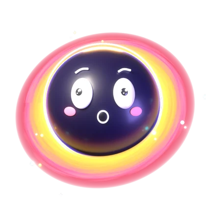

Gemínidas 2026: cuándo y a qué hora ver la lluvia de estrellas
Esta cita ya pasó. Mira las próximas.
De las mejores del año, y esta vez la Luna casi no molesta. Busca un sitio oscuro, túmbate, deja que los ojos se acostumbren y mira el cielo; no hacen falta prismáticos.

- España
- desde las 22:00 hasta el amanecer
- México
- desde las 22:00 hasta el amanecer
- Argentina
- desde medianoche; mejor hacia las 2:00
¿Cuándo son las Gemínidas en 2026?
La mejor noche es la del 13 al 14 de diciembre. La Organización Internacional de Meteoros sitúa el máximo el 14 de diciembre a las 14:00 de tiempo universal, y es un máximo ancho.
¿Cuántos meteoros se ven?
La NASA indica que, con cielo oscuro, se pueden esperar de 40 a 50 por hora. Desde una ciudad se ven menos.
¿Molestará la Luna?
Casi nada: está en fase creciente y fina.
¿Hacia dónde hay que mirar?
No hace falta apuntar a un sitio concreto. Parecen salir de la constelación de Géminis, pero pueden cruzar cualquier parte del cielo.
¿Se ven desde el hemisferio sur?
Sí, aunque mejor desde el norte. En el sur, el punto del que parecen salir aparece hacia la medianoche y está más alto sobre las 2:00.
¿De dónde salen las Gemínidas?
Del asteroide 3200 Faetón: la Tierra atraviesa los restos que ha dejado.
Fuentes: NASA · IMO, calendario 2026
Más citas con el cielo
- Luna nueva: la noche más oscura (9 de diciembre)
- Solsticio de diciembre (21 de diciembre)
- Superluna de Nochebuena (23 y 24 de diciembre)